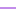

<!doctype html>
<html lang="en">
    <head>
        <meta charset="utf-8">
        <meta http-equiv="X-UA-Compatible" content="IE=edge">
        <meta name="viewport" content="initial-scale=1,user-scalable=no,maximum-scale=1,width=device-width">
        <meta name="mobile-web-app-capable" content="yes">
        <meta name="apple-mobile-web-app-capable" content="yes">
        <link rel="stylesheet" href="css/leaflet.css">
        <link rel="stylesheet" href="css/qgis2web.css"><link rel="stylesheet" href="css/fontawesome-all.min.css">
        <style>
        html, body, #map {
            width: 100%;
            height: 100%;
            padding: 0;
            margin: 0;
        }
        </style>
        <title></title>
    </head>
    <body>
        <div id="map">
        </div>
        <script src="js/qgis2web_expressions.js"></script>
        <script src="js/leaflet.js"></script>
        <script src="js/leaflet.rotatedMarker.js"></script>
        <script src="js/leaflet.pattern.js"></script>
        <script src="js/leaflet-hash.js"></script>
        <script src="js/Autolinker.min.js"></script>
        <script src="js/rbush.min.js"></script>
        <script src="js/labelgun.min.js"></script>
        <script src="js/labels.js"></script>
        <script src="data/INSTIPER_1.js"></script>
        <script src="data/BATAS_2.js"></script>
        <script>
        var highlightLayer;
        function highlightFeature(e) {
            highlightLayer = e.target;

            if (e.target.feature.geometry.type === 'LineString') {
              highlightLayer.setStyle({
                color: '#ffff00',
              });
            } else {
              highlightLayer.setStyle({
                fillColor: '#ffff00',
                fillOpacity: 1
              });
            }
            highlightLayer.openPopup();
        }
        var map = L.map('map', {
            zoomControl:true, maxZoom:28, minZoom:1
        }).fitBounds([[-7.762389165128102,110.42183274841943],[-7.759531670382498,110.42713074807432]]);
        var hash = new L.Hash(map);
        map.attributionControl.setPrefix('<a href="https://github.com/tomchadwin/qgis2web" target="_blank">qgis2web</a> &middot; <a href="https://leafletjs.com" title="A JS library for interactive maps">Leaflet</a> &middot; <a href="https://qgis.org">QGIS</a>');
        var autolinker = new Autolinker({truncate: {length: 30, location: 'smart'}});
        var bounds_group = new L.featureGroup([]);
        function setBounds() {
        }
        map.createPane('pane_GoogleSatellite_0');
        map.getPane('pane_GoogleSatellite_0').style.zIndex = 400;
        var layer_GoogleSatellite_0 = L.tileLayer('https://mt1.google.com/vt/lyrs=s&x={x}&y={y}&z={z}', {
            pane: 'pane_GoogleSatellite_0',
            opacity: 1.0,
            attribution: '<a href="https://www.google.at/permissions/geoguidelines/attr-guide.html">Map data ©2015 Google</a>',
            minZoom: 1,
            maxZoom: 28,
            minNativeZoom: 0,
            maxNativeZoom: 20
        });
        layer_GoogleSatellite_0;
        map.addLayer(layer_GoogleSatellite_0);
        function pop_INSTIPER_1(feature, layer) {
            layer.on({
                mouseout: function(e) {
                    for (i in e.target._eventParents) {
                        e.target._eventParents[i].resetStyle(e.target);
                    }
                    if (typeof layer.closePopup == 'function') {
                        layer.closePopup();
                    } else {
                        layer.eachLayer(function(feature){
                            feature.closePopup()
                        });
                    }
                },
                mouseover: highlightFeature,
            });
            var popupContent = '<table>\
                    <tr>\
                        <td colspan="2">' + (feature.properties['id'] !== null ? autolinker.link(feature.properties['id'].toLocaleString()) : '') + '</td>\
                    </tr>\
                    <tr>\
                        <td colspan="2">' + (feature.properties['NAMA'] !== null ? autolinker.link(feature.properties['NAMA'].toLocaleString()) : '') + '</td>\
                    </tr>\
                </table>';
            layer.bindPopup(popupContent, {maxHeight: 400});
        }

        function style_INSTIPER_1_0() {
            return {
                pane: 'pane_INSTIPER_1',
                opacity: 1,
                color: 'rgba(227,26,28,1.0)',
                dashArray: '',
                lineCap: 'butt',
                lineJoin: 'miter',
                weight: 1.0, 
                fill: true,
                fillOpacity: 1,
                fillColor: 'rgba(231,113,72,0.0)',
                interactive: true,
            }
        }
        map.createPane('pane_INSTIPER_1');
        map.getPane('pane_INSTIPER_1').style.zIndex = 401;
        map.getPane('pane_INSTIPER_1').style['mix-blend-mode'] = 'normal';
        var layer_INSTIPER_1 = new L.geoJson(json_INSTIPER_1, {
            attribution: '',
            interactive: true,
            dataVar: 'json_INSTIPER_1',
            layerName: 'layer_INSTIPER_1',
            pane: 'pane_INSTIPER_1',
            onEachFeature: pop_INSTIPER_1,
            style: style_INSTIPER_1_0,
        });
        bounds_group.addLayer(layer_INSTIPER_1);
        map.addLayer(layer_INSTIPER_1);
        function pop_BATAS_2(feature, layer) {
            layer.on({
                mouseout: function(e) {
                    for (i in e.target._eventParents) {
                        e.target._eventParents[i].resetStyle(e.target);
                    }
                    if (typeof layer.closePopup == 'function') {
                        layer.closePopup();
                    } else {
                        layer.eachLayer(function(feature){
                            feature.closePopup()
                        });
                    }
                },
                mouseover: highlightFeature,
            });
            var popupContent = '<table>\
                    <tr>\
                        <td colspan="2">' + (feature.properties['id'] !== null ? autolinker.link(feature.properties['id'].toLocaleString()) : '') + '</td>\
                    </tr>\
                    <tr>\
                        <td colspan="2">' + (feature.properties['JALAN'] !== null ? autolinker.link(feature.properties['JALAN'].toLocaleString()) : '') + '</td>\
                    </tr>\
                </table>';
            layer.bindPopup(popupContent, {maxHeight: 400});
        }

        function style_BATAS_2_0(feature) {
            switch(String(feature.properties['JALAN'])) {
                case 'GARIS':
                    return {
                pane: 'pane_BATAS_2',
                opacity: 1,
                color: 'rgba(131,23,214,1.0)',
                dashArray: '',
                lineCap: 'square',
                lineJoin: 'bevel',
                weight: 1.0,
                fillOpacity: 0,
                interactive: true,
            }
                    break;
                default:
                    return {
                pane: 'pane_BATAS_2',
                opacity: 1,
                color: 'rgba(170,240,116,1.0)',
                dashArray: '',
                lineCap: 'square',
                lineJoin: 'bevel',
                weight: 1.0,
                fillOpacity: 0,
                interactive: true,
            }
                    break;
            }
        }
        map.createPane('pane_BATAS_2');
        map.getPane('pane_BATAS_2').style.zIndex = 402;
        map.getPane('pane_BATAS_2').style['mix-blend-mode'] = 'normal';
        var layer_BATAS_2 = new L.geoJson(json_BATAS_2, {
            attribution: '',
            interactive: true,
            dataVar: 'json_BATAS_2',
            layerName: 'layer_BATAS_2',
            pane: 'pane_BATAS_2',
            onEachFeature: pop_BATAS_2,
            style: style_BATAS_2_0,
        });
        bounds_group.addLayer(layer_BATAS_2);
        map.addLayer(layer_BATAS_2);
        var baseMaps = {};
        L.control.layers(baseMaps,{'BATAS<br /><table><tr><td style="text-align: center;"></td><td>GARIS</td></tr><tr><td style="text-align: center;"></td><td></td></tr></table>': layer_BATAS_2,' INSTIPER': layer_INSTIPER_1,"Google Satellite": layer_GoogleSatellite_0,}).addTo(map);
        setBounds();
        var i = 0;
        layer_INSTIPER_1.eachLayer(function(layer) {
            var context = {
                feature: layer.feature,
                variables: {}
            };
            layer.bindTooltip((layer.feature.properties['NAMA'] !== null?String('<div style="color: #33a02c; font-size: 10pt; font-family: \'Open Sans\', sans-serif;">' + layer.feature.properties['NAMA']) + '</div>':''), {permanent: true, offset: [-0, -16], className: 'css_INSTIPER_1'});
            labels.push(layer);
            totalMarkers += 1;
              layer.added = true;
              addLabel(layer, i);
              i++;
        });
        resetLabels([layer_INSTIPER_1]);
        map.on("zoomend", function(){
            resetLabels([layer_INSTIPER_1]);
        });
        map.on("layeradd", function(){
            resetLabels([layer_INSTIPER_1]);
        });
        map.on("layerremove", function(){
            resetLabels([layer_INSTIPER_1]);
        });
        </script>
    </body>
</html>
